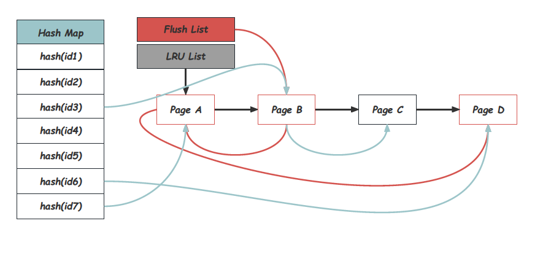
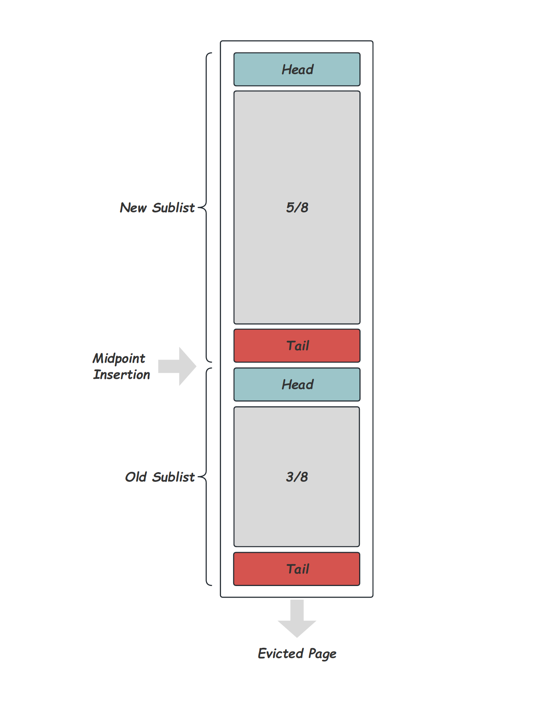
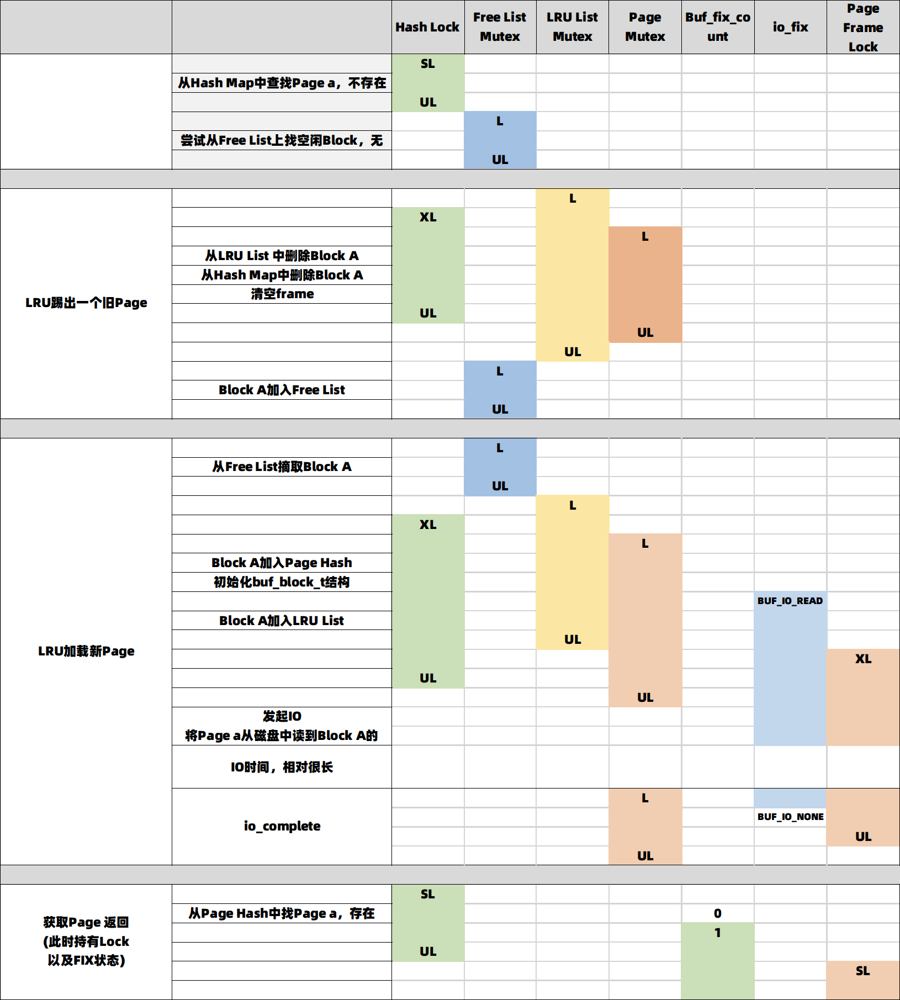

庖丁解InnoDB之Buffer Pool
作者：王康
github：github.com/CatKang
简述：介绍MySQL8.0版本Buffer Pool的核心功能
原文链接：http://mysql.taobao.org/monthly/2023/08/01/
Buffer Pool是InnoDB中非常重要的组成部分，也是数据库用户最关心的组件之一。Buffer Pool的基本功能并不复杂，设计实现也比较清晰，但作为一个有几十年历史的工业级数据库产品，不可避免的在代码上融合了越来越多的功能，以及很多细节的优化，从而显得有些臃肿和晦涩。本文希望聚焦在Buffer Pool的本职功能上，从其提供的接口、内存组织方式、Page获取、刷脏等方面进行介绍，其中会穿插一些重要的优化手段，之后用单独的一节介绍其中稍显复杂的并发控制，也就是各种mutex的设计及实现。而除此之外，像Change Buffer、压缩Page、Double Write Buffer等功能虽然大量的穿插在Buffer Pool的实现之中，但其本身并不属于Buffer Pool的核心逻辑，本文并不会包括这部分内容，本文代码相关内容基于MySQL 8.0[1]。
背景¶
传统数据库中的数据是完整的保存在磁盘上的，但计算却只能发生在内存中，因此需要有良好的机制来协调内存及磁盘的数据交互，这就是Buffer Pool存在的意义。也因此Buffer Pool通常按固定长度的Page来管理内存，从而方便的进行跟磁盘的数据换入换出。除此之外，磁盘和内存在访问性能上有着巨大的差距，如何最小化磁盘的IO就成了Buffer Pool的设计核心目标。《数据库故障恢复的前世今生》[2]一文中介绍过，主流的数据库会采用REDO LOG加UNDO LOG，而不是限制刷脏顺序的方式，来保证数据库ACID特性。这种做法也保证了Buffer Pool可以更专注地实现高效的Cache策略。 Buffer Pool作为一个整体，其对外部使用者提供的其实是非常简单的接口，我们称之为FIX-UNFIX接口[3]，之所以需要FIX和UNFIX，是因为对Buffer Pool来说，上层对Page的使用时长是未知的，这个过程中需要保证Page被正确的维护在Buffer Pool中：
- 上层调用者先通过索引获得要访问的Page Number；
- 之后用这个Page Number调用Buffer Pool的FIX接口，获得Page并对其进行访问或修改，被FIX的Page不会被换出Buffer Pool；
- 之后调用者通过UNFIX释放Page的锁定状态。
不同事务、不同线程并发的调用Buffer Pool的FIX-UNFIX接口的序列，我们称为Page 访问序列（Page Reference String），这个序列本身是Buffer Pool无关的，只取决于数据库上面的负载类型、负载并发度、上层的索引实现以及数据模型。而通用数据库的Buffer Pool设计就是希望能在大多数的Page 访问序列下，尽可能的实现最小化磁盘IO以及高效访问的目标。 为了实现这个目标，Buffer Pool内部做了大量的工作，而替换算法是其中最至关重要的部分，由于内存容量通常是远小于磁盘容量的，替换算法需要在内存容量达到上限时，选择将现有的内存Page踢出，替换成新的被访问的Page，好的替换算法可以在给定的Buffer Size下尽量少的出现Buffer Miss。理想的情况下， 我们每次替换未来的访问序列中最远的那个Page，这也是OPT算法的思路，但显然获得未来的Page序列是不切实际的，因此OPT算法只是一个理想模型，作为评判替换算法的一个最优边界。与之相反的是作为最劣边界的Random算法，其思路是完全随机的替换。大多数的情况下， Page的访问其实是有热度区分的，这也就给替换算法一个通过历史序列判断未来序列的可能，参考的指标通常有两个：
- 访问距离（Age）：在Page访问序列上，某个Page上一次访问到现在的距离；
- 引用次数（References）：某个Page历史上或者一段时间的历史上被访问的次数。
只考虑访问距离的FIFO（First In First Out）算法和只考虑引用次数的LFU（Least Frequently Used）算法都被证明在特定序列下会有巨大的缺陷。而好的实用的替换算法会同时考虑这两个因素，其中有我们熟悉的LRU(Least Recently Used)算法以及Clocks算法。本文接下来会详细的介绍InnoDB中的LRU替换算法的实现，除此之外，还会包括如何实现高效的Page查找、内存管理、刷脏策略以及Page的并发访问。
使用方式¶
首先，我们来看在InnoDB中，Buffer Pool的功能是如何被使用的。《B+树数据库加锁历史》[4]以及《B+树数据库故障恢复概述》[5]两篇文章中，指出B+树数据库为了获得更高的事务并发度，在并发控制和故障恢复中都区分逻辑内容和物理内容。其中物理内容指的就是就是对Page的访问，一个逻辑事务可以在不同时刻发起并提交多个System Transaction，System Transaction会在很短的时间内就提交，并且不需要回滚；通常只会涉及几个Page，比如发生分裂或合并的父子节点，数据节点和Undo节点；System Transaction通过Redo + No Steal的方式保证多个Page的Crash Safe；不同System Transaction之间会通过比Lock更轻量的Latch来保证安全的并发访问。 简而言之，System Transaction需要依次获取几个不同的Page，对获取的Page加Latch，使用或修改Page，并写Redo Log，来保证多个Page访问的原子。在InnoDB中这个System Transaction就是MTR（Mini-Transaction）。而Buffer Pool提供的就是通过Page No获取对应Page的接口。因此可以说，在InnoDB中MTR（Min-Transaction）就是Buffer Pool的主要使用方式。
1. 上层用调用buf_page_get_gen获取需要的Page¶
如下是上层通过Buffer Pool获取一个需要的Page的代码，buf_page_get_gen接口对应上面提到的FIX接口：
其中buf_block_t是Page对应的内存管理结构，通过block->frame指针可以访问完整的Page内容；第一个参数page_id指定需要获取的Page号，这个page_id通常是通过上层的BTree搜索得到；第三个参数rw_latch指定需要对Page加的读写Latch模式；最后一个mtr参数就是上面提到的Mini-Transaction，同一个mtr访问多个page时，会将这个mtr结构在每次调用buf_page_get_gen的时候传递下去。
2. buf_page_get_gen内部获取Page并标记FIX及加锁¶
在buf_page_get_gen内部首先需要获取需要的Page，这个过程会在后面详细介绍，在此之后会做两件事清，标记page的FIX状态（page->buf_fix_count），阻止Page的换出，以及对Page加对应的rw_latch模式的的锁（block->lock）
...
/* 1.标记page的FIX状态，阻止其被换出，这里是一个page结构上的计数器buf_fix_count */
buf_block_fix(fix_block);
...
/* 2. 对Page加对应的rw_latch模式的的Latch，也就是block结构上的lock */
mtr_memo_type_t fix_type;
switch (rw_latch) {
...
case RW_S_LATCH:
rw_lock_s_lock_inline(&fix_block->lock, 0, file, line);
fix_type = MTR_MEMO_PAGE_S_FIX;
break;
...
}
/* 最后这个block的指针以及加锁的模式还会一起记录在mtr的结构中，方便mtr commit时的释放 */
mtr_memo_push(mtr, fix_block, fix_type);
...
3. MTR Commit的时候释放Lock¶
MTR结构中会包含一个或多个已经持有锁的Page，最后mtr提交的时候，一起做UNFIX并放锁：
static void memo_slot_release(mtr_memo_slot_t *slot) {
switch (slot->type) {
buf_block_t *block;
case MTR_MEMO_BUF_FIX:
case MTR_MEMO_PAGE_S_FIX:
case MTR_MEMO_PAGE_SX_FIX:
case MTR_MEMO_PAGE_X_FIX:
block = reinterpret_cast<buf_block_t *>(slot->object);
/* 1. 对Page UNFIX，即buf_fix_count-- */
buf_block_unfix(block);
/* 2. 释放Page的锁，block->lock */
buf_page_release_latch(block, slot->type);
break;
...
}
...
}
通过本节的介绍，我们已经了解了InnoDB是中是如何使用Buffer Pool提供的接口访问Page的了，在具体介绍如何维护Page支持高效的查找和刷脏之前，我们先从整体上了解一下Buffer Pool的组织结构。
组织结构¶
为了减少并发访问的冲突，InnoDB将Buffer Pool划分为innodb_buffer_pool_instances个Buffer Pool Instances，Instance之间没有锁冲突，每个Page固定属于其中一个Instance。从结构上看每个Instance都是对等的，因此本文接下来的内容都以一个Instance来进行介绍的。
Block、Page和Chunk¶
Buffer Pool将分配的内存大小划分为相等的Block，同时为每一个Block分配了一个内存管理结构buf_block_t，用来维护Block相关的状态信息、加锁信息、内存数据结构指针等。Block是Page在内存中的载体，很多场景下他就是Page。代码上看buf_block_t的开头就是维护Page信息的buf_page_t（其中包括page_id，发生修改的lsn信息oldest_modification, newest_modification等），从而他们之间可以直接做类型强制转换：
struct buf_block_t {
buf_page_t page; /*!< page information; this must
be the first field, so that
buf_pool->page_hash can point
to buf_page_t or buf_block_t */
...
}
单个buf_block_t需要几百个字节存储，以100G的Buffer Pool，16KB的Page Size为例，将会有6M个Block，这么多的buf_block_t的内存占用也是非常可观的。为了方便这部分内存的分配和管理，InnoDB将其直接拼接到Block数组之前，这也是为什么Buffer Pool的实际内存占用会看到略大于配置的innodb_buffer_pool_size。后来为了方便在线调整大小，从5.7开始Buffer Pool又将内存划分为默认128MB的Chunk，每个Chunk内部都是如下的内存结构：

在启动时，buf_chunk_init函数中通过mmap分配Buffer Pool需要的所有内存，因此InnoDB在启动时并不会真正占用这么大的物理内存，而是随着Page的分配不断上涨的。另外，由于每个Block的内存地址要求按照Page Size对齐，而buf_block_t并不是一定存在Page Size的约数关系，在Page数组的之前还可能有部分不会使用的内存碎片。
Hash Map、LRU List、Free List、Flush List¶
从使用的角度出发， 用指定的page_id调用接口buf_page_get_gen是一个统一且非常频繁的操作，InnoDB用一个从page_id到Block的Hash Map来支持高效的查询，所有在Buffer Pool中的Page都可以在Hash Map中找到。这个Hash Map采用链式冲突的方式实现，通过buf_pool_t中的page_hash指针访问。除此之外，Buffer Pool在内存中还维护了很多的链表来管理Block，其中LRU List承担的就是LRU替换算法中的栈的功能，Block被访问到时会被移动到LRU List的Header上，而长期未被访问的Page会逐步的被推到LRU List的Tail位置，直至被换出。Free List中维护的是尚未被使用到的Block，每一个Block，在同一时刻一定存在于LRU List或者Free List上。被修改的Page在InnoDB中被称为脏页，脏页需要在合适的时候进行刷盘。为了获取可以Checkpoint的位置，推进尚未刷脏的最小脏页位置是必要的，因此需要一个按oldest_modification有序的脏页序列，这就是Flush List的意义，脏页一定是在使用中的Block，因此一定同时也在LRU List上。整个内存结构如下图所示：

获取Page¶
作为Buffer Pool统一的对外接口，buf_page_get_gen会首先用给定的Page ID从Hash Map中查找对应的Page，最简单的，该Page已经在Buffer Pool，可以直接标记FIX加Lock后返回。对良好配置的Buffer Pool，绝大多数的Page需求都是可以在这里就满足的。show engine innodb status命令结果的Buffer Pool Section中有专门的hit rate的统计。如果Page还不在Buffer Pool就需要找到一块空闲的内存Block，初始化内存结构，然后将磁盘对应的Page加载进来。
获取Free Block¶
获取空闲Block的逻辑在函数buf_LRU_get_free_block中实现。Free List中维护了所有的空闲Block，可以通过buf_LRU_get_free_only直接摘取一个下来使用。但更常见的情况是，Free List根本没有Block，所有的Block已经都在LRU List上。这个时候就需要LRU替换算法来踢出一个已有的Page，将其Block分配给新的Page使用。buf_LRU_scan_and_free_block会从LRU的尾部向前遍历innodb_lru_scan_depth个Page，被选择的Page必须要满足三个条件：不是脏页、没有被上层FIX以及没有在IO过程中。如果没有找到满足条件的Page，第二轮的遍历就会覆盖整LRU。极端条件下，到这里仍然没能获得一个可以逐出的Page，可能是因为脏页太多导致，这个时候就需要通过buf_flush_single_page_from_LRU来直接Flush一个没有被FIX，且没有IO的Page，之后将其变成一个上面讲到的可以逐出的Page。被选择可以逐出的Page会通过buf_LRU_free_page从LRU List及Page Hash中删除，之后加入到Free List中，供本次访问的Page使用。
填充新的Page内容¶
获取到的Free Block会先通过buf_page_init进行初始化，其中会对buf_block_t，包括buf_page_t的字段进行初始化和填充，之后加入到Hash Map中，并通过buf_LRU_add_block加入到LRU List。最后在通过磁盘IO将Page数据填充到buf_block_t的frame字段中。在IO读取的过程中会对Page标记IO FIX状态来阻止其他线程buf_page_get_gen时的换出，并且持有buf_block_t的lock来阻止其他线程对Page内容的访问。 为了更好的利用磁盘的顺序读性能，InnoDB还支持两种预读方式，每当读一个Page成功后都会判断是否要将周围Page一起加载进Buffer Pool，随机预读会参考同一个Extend中最近是不是有大量Page被访问，可以通过innodb_random_read_ahead配置，而顺序预读参考的是是否有大量的Page正在顺序被访问到，可以通过innodb_read_ahead_threshold配置
LRU实现¶
严格的LRU替换算法，会在每次被访问的时候，将对应的Page移动到LRU List的Header，也就是提升近期刚访问Page的热度，使之更不容易被换出。但这样的实现会存在一个问题，通常数据库的一个Scan操作可能会访问到大量的，甚至超过内存容量的Page数，但这些Page在Scan结束后可能并不会继续被使用，在这个过程中，LRU List被整个替换一遍，导致Scan操作结束后的一段时间内，Buffer Pool的命中率变的很低。这当然是我们不愿意看到的。InnoDB应对这个问题的方式，是将LRU List分成两段[6]，如下图所示[7]是LRU实现的示意图，通过一个Midpoint将整个List分为New Sublist和Old Sublist，每次需要Page换出的时候会从List的尾部选择：

当LRU List的长度超过BUF_LRU_OLD_MIN_LEN(512)时，新的插入会开始维护出Midpoint位置，实现里是一个叫做LRU_old的指针，该指针指向LRU List距离Tail大约3/8的位置。之后新的buf_LRU_add_block都会将Page插入到LRU_old的位置，而不是LRU List的Header。每次Page插入或者删除时，都需要通过buf_LRU_old_adjust_len来尝试调整LRU_old位置，尽量将LRU_old指针保持在3/8的位置，之所以说尽量，是因为InnoDB中为了避免频繁的调整LRU_old，设置了BUF_LRU_OLD_TOLERANCE(20)的容忍区间。 那么，什么时候会插入到Header呢？每次通过buf_page_get_gen获取一个Page以后，无论是直接命中还是从磁盘换入，都会通过buf_page_make_young_if_needed判断是否移动这个Page到LRU List的Header位置，选择移动的有两种情况：
- 如果这个Page是在LRU_old之后的位置，那么必须满足距离首次访问超过
innodb_old_blocks_time参数配置的时间，如此一来，无论多大的Scan操作最多只会污染大约3/8的LRU List，避免了前面所说的Buffer Pool效率降低问题。 - 如果这个Page在LRU_old之前的位置，那么需要距离LRU List的Header超过大约1/6的位置，这个做法是为了避免太热的Page频繁的反复向LRU Header插入。
Flush¶
Buffer Pool中发生修改的Page被称为脏页，脏页最终是需要写回到磁盘中的，这个就是Buffer Pool的Flush过程。脏页除了在LRU List上之外，还会被插入到Flush List，Flush List上的Page大体是按照oldest_modification有序排列的，但实现上因为并发的原因，其实是接受了在一个小范围（log_sys->recent_closed的容量大小）内存在乱序的，当然这一点需要在确认checkpoint位置的时候做处理[8]。
脏页的产生¶
首先，先来看脏页产生的过程。当DB需要修改的Page的时候会在buf_page_get_gen获取的Page的时候指定RW_X_LATCH的latch模式，来对获得到的Page加X Lock；之后修改Page内容的同时，将对应的Redo Log写入到独占的Min-transaction buffer中；Min-transaction commit的时候将log拷贝到全局的Log Buffer中，并通过buf_flush_note_modification函数将该Page加入到Buffer Pool的Flush List上面，并用mtr的start_lsn及end_lsn更新Page的oldest_modification及newest_modification。
刷脏时机¶
脏页最终是需要写回到磁盘中的，而这个写回时机，其实是数据库的故障恢复策略决定的，InnoDB采用了《数据库故障恢复机制的前世今生》[9]中介绍的Redo + Undo的策略，将Page的刷脏跟事务的提交时间完全剥离开来，使得Buffer Pool的刷脏策略可以更灵活。理论上讲，假设Buffer Pool足够大，那么将Page一直缓存在Buffer Pool中，等所有的修改完成再写Page一定是最高效的，因为这样最小化了相对于内存访问很慢的磁盘IO。但显然，这是不现实的，主要影响因素有两个，这两个因素也决定了InnoDB Buffer Pool的刷脏时机：
- 脏页总量：由于通常Buffer Pool的容量都是远小于磁盘数据总量的，当内存不足时需要通过LRU换出老Page，前面也提到了脏页是不能直接被换出的。脏页总量的因素倾向于优先Flush LRU Tail附近Page。
- Active Redo总量：也就是Checkpoint LSN之后的Redo总量，《庖丁解InnoDB之REDO LOG》[8]中介绍过，InnoDB的Redo是在
innodb_log_files_in_group配置的redo数量中循环使用的，落后Checkpoint会导Active Redo总量过高，致使剩余可用的Redo空间不足，而最老脏页的位置是限制Checkpoint推进的最直接原因。Active Redo总量因素倾向于优先将oldest_modification最小的Page，也就是Flush List的Tail位置进行刷脏。
依据这两个因素，InnoDB的Buffer Pool提供了三种模式的Flush，其中Single Flush应对的是脏页总量过高的极端情况，由用户线程在完全找不到可以换出的Clean Page时触发，每次同步刷一个Page；而Sync Flush可以认为是应对Active Redo总量过高的极端情况，在可用的Redo空间严重不足或需要强制推进Checkpoint时触发，Sync Flush会尽可能的将oldest_modification小于制定LSN的Page全部刷脏，因此可能会涉及大量Page，从而严重影响用户请求。因此，理想情况下，这两种刷脏模式都是应该尽量避免的。而更多的时候应该依靠的是后台一直在运行的Batch Flush。
Batch Flush¶
Batch Flush由一个Page Coordinator线程和一组Page Cleaner线程负责，具体的个数跟Buffer Pool的Instance数绑定，所有的线程共用一个page_cleaner_t结构体来做一些统计和状态管理。通常情况下Page Coordinator会周期性被唤醒，通过page_cleaner_flush_pages_recommendation计算每一轮需要刷脏的Page数，然后将这个需求下发给所有的Page Cleaner线程，并等待所有的Page Cleaner刷脏完毕，Page Coordinator自己也会承担一份刷脏任务。而page_cleaner_flush_pages_recommendation判断刷脏量的时候，会综合考虑当前的脏页总量，Active Redo总量，以及磁盘IO的承载能，其中磁盘能力这个可以通过参数innodb_io_capacity以及innodb_io_capacity_max指定，下面是整理过的计算公式：
n_pages = (innodb_io_capacity * (ut_max(pct_for_dirty, pct_for_lsn)) / 100
+ avg_page_rate
+ pages_for_lsn
) / 3;
/* 上限被参数innodb_io_capacity_max 限制 */
if (n_pages > srv_max_io_capacity) {
n_pages = srv_max_io_capacity;
}
- 静态脏页总量（pct_for_dirty）：根据当前已有的脏页总量计算的一个刷脏比例。脏页量低于
innodb_max_dirty_pages_pct_lwm不刷脏，高于innodb_max_dirty_pages_pct_lwm，则按脏页量占innodb_max_dirty_pages_pct的百分比刷脏，也就说大于innodb_max_dirty_pages_pctpct_for_diry就会成为百分百。也就是说，pct_for_dirty是一个在pct_lwm到pct之间，从0到100按脏页率线性增长的值。 - 静态Active Redo（pct_for_lsn）：根据当前的Active Redo计算的刷脏比例。如果Active Redo的量超过了一个接近Redo空间满的值
log_sys->max_modified_age_async，或者用户配置了innodb_adaptive_flushing，这里就用当前的Active Redo水位计算一个pct_for_lsn，这里实现上不是一个纯线性的关系，而是随着Active Redo的增加pct_for_lsn增长速度也在加快。 - 动态脏页量变化（avg_page_rate）：由于n_pages的判断过程是一个周期的打点行为，只考虑静态的水位显然是不够的，这里还会将这个周期内的脏页增长速率作为一个因素计算进来。
- 动态Active Redo变化（pages_for_lsn）：类似的这里也会考虑周期内的Redo增长速率，这里的计算方式是将单位时间内Redo的增长之后的LSN，投影到BP中Page的oldest_modification上，所覆盖的Page数就是pages_for_lsn的值。
通过上面过程计算出的n_pages数，会平分给多个Page Cleaner，然后将他们唤醒。每个Page Cleaner会负责自己独立的Buffer Pool Instance，因此之间没有冲突，每个Page Cleaner被唤醒后，会先后从LRU List及Flush List上进行刷脏，一轮刷脏结束后才会发起下一轮的刷脏。之所以要从LRU List做刷脏还是为了保持足够用的Free Page，因此只有当Free List上的Page小于innodb_lru_scan_depth的时候才会发起。如果不是脏页可以直接用buf_LRU_free_page从LRU上删除，否则还需要调用buf_flush_page_and_try_neighbors先进行刷脏，从函数名字也可以看出，刷每一个Page的时候都会尝试对其周围的其他脏页也进行Flush，这个主要还是为了利用磁盘的顺序写性能，可以通过innodb_flush_neighbors配置开关。如果从LRU List上没有Flush足够量的Page就需要遍历Flush List，同样调用buf_flush_page_and_try_neighbors进行刷脏。 无论哪种方式的刷脏，最终都会进入buf_flush_write_block_low写盘，除了Single Flush以外，所有的Flush操作都是异步进行的，IO结束后会在IO线程中回调buf_page_io_complete做收尾工作，包括清空IO FIX状态，释放Page Lock，以及从Flush List和LRU List上删除。
并发控制¶
InnoDB中可能存在大量的线程同时竞争访问Buffer Pool，包括所有通过buf_page_get_gen获取Page的用户线程和后台线程；上面提到的Flush线程；以及IO线程。作为整个数据库的数据中枢，Buffer Pool对并发访问的支持能力直接影响数据库的性能，从代码中也可以看出其中有大量锁相关的逻辑，作为一个工业级的数据库实现，这些逻辑都经过了大量细节上的优化，一定程度上增加了代码的复杂性。而锁的优化思路，无外乎降低锁粒度，减少锁时间，消除锁请求等，本节就沿着这样的思路介绍Buffer Pool中锁的设计与实现。Buffer Pool中涉及到的锁，按照锁保护对象的层次，依次分为：保护Hash表的Hash Map Lock，保护List结构的List Mutex，保护buf_block_t中结构的Block Mutex，保护真正的Page内容的Page Frame Lock。
Hash Map Lock¶
所有的buf_page_get_gen请求的第一步就是通过Hash Map判断Block是否存在于Buffer Pool中，可想而知这里的竞争是极其强烈的，InnoDB中采用了分区锁的办法，分区的数量可以通过innodb_page_hash_locks（16）来配置，每个分区会维护一个独立的读写锁。每次请求会先通过page_id映射到一个分区上，然后请求这个分区的读写锁。如此一来只有映射到同一个分区的请求才会产生所冲突。
List Mutex¶
上面讲过Buffer Pool中的Block是按照List维护的，最基础的包括维护全量使用Block的LRU List，空闲页的Free List，以及脏页的Flush List。这些List都有自己独立的互斥锁Mutex，对List的读取或修改都需要持有List本身的Mutex。这些锁的目的是保护对应的List本身的数据结构，因此会最小化到对List本身数据结构访问和修改的范围内。
Block Mutex¶
每个Page的控制结构体buf_block_t上都有一个block->mutex用来保护这个block的一些诸如io_fix，buf_fix_count、访问时间等状态信息。相对于外层无论是Hash Map还是List Mutex，Block Mutex的锁粒度都小的很多，通过Block Mutex来避免更长时间的持有上层容器的锁显然是划算的。而io_fix，buf_fix_count这些信息也能显著的减少对Page Lock的争抢， 比如当Buffer Pool需要从LRU上踢出一个老Page时，需要确定这个Page没有正在被使用，以及没有在做IO操作，这个是个非常常见的行为，但他本身其实并不关心Page的内容。这时，短暂的持有Block Mutex并判断io_fix状态和buf_fix_count计数，显然会比争抢Page Frame Lock更轻量。
Page Frame Lock¶
除了Block Mutex，buf_block_t上还有一个读写锁结构block->lock，这个读写锁保护的是真正的page内容，也就是block->frame。这个锁就是《B+树数据库加锁历史》[4]一文中讲到的保护Page的Latch，在对B+Tree的遍历和修改中都可能需要获取这把锁，除此之外，涉及到Page的IO的过程中也需要持有这把锁，Page读IO由于需要直接修改内存frame内容，需要持有X lock，而写IO的过程持有的是SX Lock，来避免有其他写IO操作同时发生。
死锁避免¶
当上面这些锁中的多个需要同时获取时，为了避免不同线程间发生死锁，InnoDB规定了严格的加锁顺序，也就是Latch Order，如下所示，所有对锁的获取必须要按照这个顺序从下往上进行。这个顺序跟大多数场景的使用是一致的，但也是有例外的，比如从Flush List上选择Page进行刷脏的时候，由于Flush List Mutex的级别比较低，可以看到放掉Flush List Mutex再去获取Block Mutex的情况。
enum latch_level_t {
...
SYNC_BUF_FLUSH_LIST, /* Flush List Mutex */
SYNC_BUF_FREE_LIST, /* Free List Mutex */
SYNC_BUF_BLOCK, /* Block Mutex */
SYNC_BUF_PAGE_HASH, /* Hash Map Lock */
SYNC_BUF_LRU_LIST, /* LRU List Mutex */
...
}
示例场景¶
为了更好的理解Buffer Pool的加锁过程，我们设想这样一种场景：一个用户读请求，需要通过buf_page_get_gen来获取Page a，首先查找Hash Map发现其不在内存，检查Free List发现也没有空页，只好从LRU的Tail先踢出一个老的Page，将其Block A加入Free List，之后再从磁盘将Page a读入Block A，最后获得这个Page a，并持有其Lock及FIX状态。得到一个如下表所示的加锁过程：

这张表中可以清楚的看到：1，每种锁都限制在真正操作其保护的数据结构的较小范围内；2，当需要同时持有多个锁时，严格遵守上面说的Latch Order，比如从LRU和Hash Map中加入或删除时，严格遵守LRU List Mutex -> Hash Map Mutex -> Block Mutex的顺序。3，在IO过程中，除了Page Frame Lock外不持有任何锁，同时也通过设置io_fix，避免了诸如LRU算法检查是否可以换出时，对Page Frame Lock加锁。篇幅关系，这里只介绍了这一种场景的加锁顺序，更多的内容可以见链接：Flush List刷脏加锁，LRU List刷脏加锁。
{kind=link}
{kind=link}
总结¶
本文聚焦于InnoDB中的Buffer Pool的核心功能，首先从宏观上介绍其背景，包括设计目标、接口、遇到的问题及替换算法的选择等；然后后从使用者的角度介绍了Buffer Pool作为一个整体对外暴露的统一接口和调用方式；之后介绍了Buffer Pool内部获取Page的详细过程以及LRU替换算法的实现；再之后介绍了Page刷脏的触发因素及过程；最后梳理了Buffer Pool如何安全的实现高并发高性能。
参考¶
[2] 数据库故障恢复的前世今生
[4] B+树数据库加锁历史
[5] B+树数据库故障恢复概述
[6] MySQL 8.0 Reference Manual 15.8.3.3 Making the Buffer Pool Scan Resistant
[7] MySQL 8.0 Reference Manual 15.5.1 Buffer Pool
[9] 数据库故障恢复机制的前世今生
[10] Buffer pool 并发控制
[11] Buffer Pool Performance Improvements in the InnoDB Storage Engine of MariaDB Server
[12] PolarDB 数据库内核月报